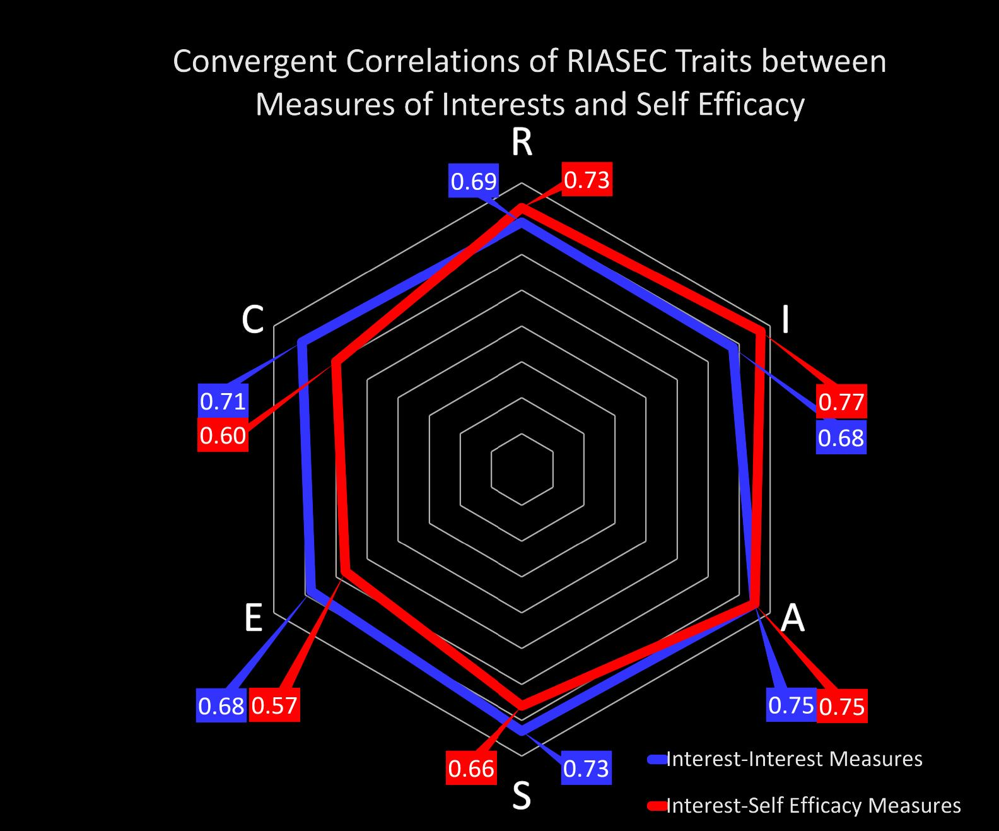
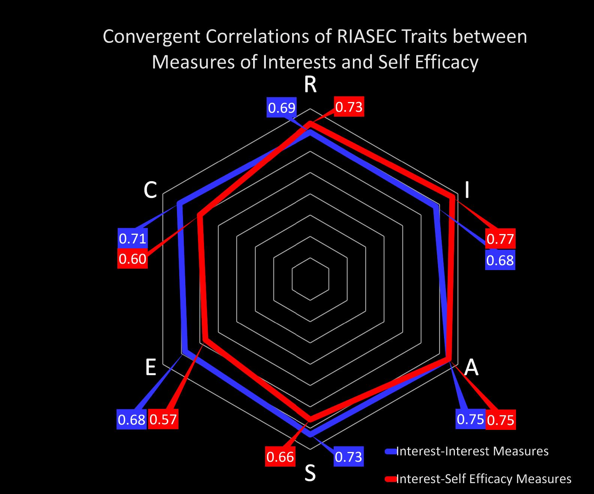

Interests and self-efficacy largely capture the same underlying attitudes toward work tasks.

1 Department of Psycology, University of South Florida
SCCT Flowchart?
RIASEC Hexagon
Cross method data
Factor analysis data
Interests and self-efficacy largely capture the same underlying attitudes toward work tasks.
